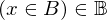
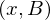

Theorem set_subset_eq_of_union_with_set of type Forall¶
from the theory of proveit.logic.sets¶
see dependencies
In [1]:
import proveit
# Automation is not needed when only building an expression:
proveit.defaults.automation = False # This will speed things up.
proveit.defaults.inline_pngs = False # Makes files smaller.
%load_theorem_expr # Load the stored theorem expression as 'stored_expr'
# import the special expression
from proveit.logic.sets import set_subset_eq_of_union_with_set
In [2]:
# check that the built expression is the same as the stored expression
assert set_subset_eq_of_union_with_set.expr == stored_expr
assert set_subset_eq_of_union_with_set.expr._style_id == stored_expr._style_id
print("Passed sanity check: set_subset_eq_of_union_with_set matches stored_expr")
In [3]:
# Show the LaTeX representation of the expression for convenience if you need it.
print(set_subset_eq_of_union_with_set.latex())
In [4]:
set_subset_eq_of_union_with_set.style_options()
Out[4]:
In [5]:
# display the expression information
set_subset_eq_of_union_with_set.expr_info()
Out[5]:
| core type | sub-expressions | expression | |
|---|---|---|---|
| 0 | Operation | operator: 8 operand: 2 |  |
| 1 | ExprTuple | 2 |  |
| 2 | Lambda | parameters: 13 body: 3 | |
| 3 | Conditional | value: 4 condition: 5 | |
| 4 | Operation | operator: 6 operands: 7 | |
| 5 | Operation | operator: 8 operand: 11 |  |
| 6 | Literal |  | |
| 7 | ExprTuple | 15, 10 | |
| 8 | Literal |  | |
| 9 | ExprTuple | 11 | |
| 10 | Operation | operator: 12 operands: 13 | |
| 11 | Lambda | parameter: 21 body: 14 | |
| 12 | Literal |  | |
| 13 | ExprTuple | 15, 22 |  |
| 14 | Operation | operator: 19 operands: 16 |  |
| 15 | Variable |  | |
| 16 | ExprTuple | 17, 18 | |
| 17 | Operation | operator: 19 operands: 20 |  |
| 18 | Literal |  | |
| 19 | Literal |  | |
| 20 | ExprTuple | 21, 22 |  |
| 21 | Variable |  | |
| 22 | Variable |  |